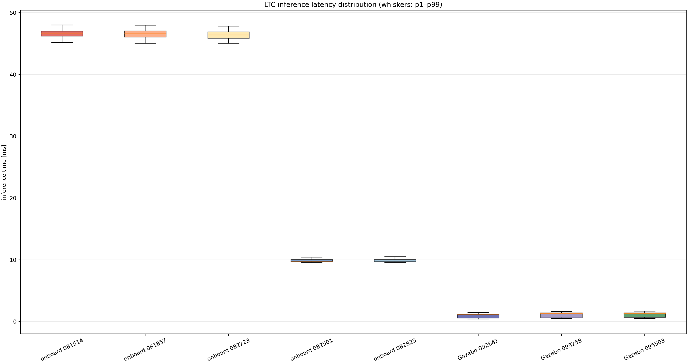
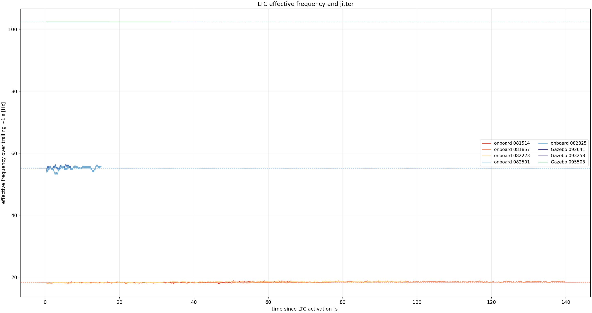

Effective Hz is measured from Δnn_periodic_count / Δtime over the enabled interval. It therefore includes scheduling, inference, sensor acquisition, and logging interference; it is not the theoretical reciprocal of inference latency.
| run | effective Hz | inference mean [ms] | median [ms] | p95 [ms] | p99 [ms] | max [ms] | total mean [ms] | compute utilization |
|---|---|---|---|---|---|---|---|---|
| onboard 081514 | 18.32 | 46.607 | 46.584 | 47.717 | 47.993 | 54.011 | 46.679 | 85.5% |
| onboard 081857 | 18.38 | 46.537 | 46.554 | 47.657 | 47.966 | 52.086 | 46.606 | 85.7% |
| onboard 082223 | 18.44 | 46.368 | 46.391 | 47.410 | 47.788 | 52.135 | 46.437 | 85.7% |
| onboard 082501 | 55.51 | 9.868 | 9.777 | 10.275 | 10.435 | 15.820 | 9.942 | 55.2% |
| onboard 082825 | 55.10 | 9.881 | 9.812 | 10.292 | 10.505 | 15.812 | 9.953 | 54.8% |
| Gazebo 092641 | 102.35 | 0.944 | 1.112 | 1.277 | 1.494 | 2.904 | 0.947 | 9.7% |
| Gazebo 093258 | 102.35 | 1.107 | 1.324 | 1.493 | 1.654 | 3.911 | 1.110 | 11.4% |
| Gazebo 095503 | 102.35 | 1.151 | 1.341 | 1.508 | 1.686 | 4.571 | 1.154 | 11.8% |


